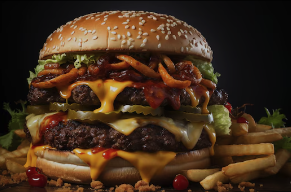

Hamburger

Burgers
For the Burger Patties:
* 1 lb ground beef (80% lean / 20% fat is ideal for juicy burgers)
* Salt (to taste)
* Pepper (to taste)
* Optional:
* 1 tbsp Worcestershire sauce
* 1 tsp garlic powder
* 1 tsp onion powder
For the Burger Buns:
* 4 burger buns (brioche, sesame, or your preferred style)
* Butter (for toasting the buns, optional)
For the Toppings:
* Lettuce (such as romaine or iceberg)
* Tomato (sliced)
* Onion (red or yellow, sliced)
* Cheese (slices of cheddar, American, Swiss, or your preferred cheese)
* Pickles (optional)
Condiments:
* Ketchup
* Mustard
* Mayonnaise
* Barbecue sauce (optional)
Optional Add-Ins:
* Bacon (crispy, for a bacon cheeseburger)
* Avocado slices (for an extra creamy touch)
* Fried egg (for a breakfast-style burger)